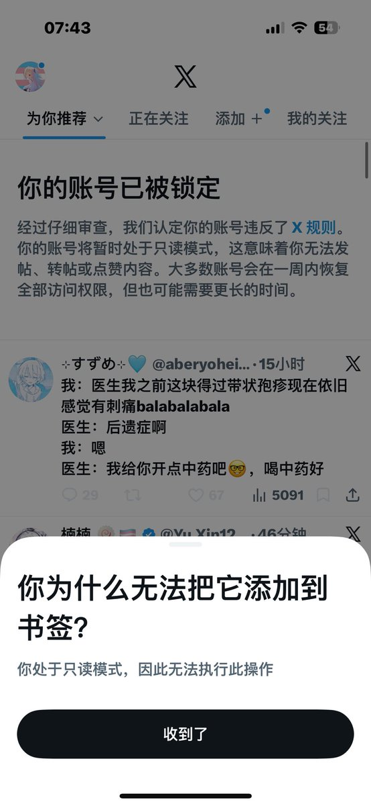

⊹すずめ⊹
@aberyoheiskm
@Ruai_0324 @aberyohei 我去竟然还有我的中药TV
诡秘你怎么又挂了啊😭😭😭摸摸摸摸摸

Ruai_🏳️⚧️🍥
@Ruai_0324
msk赶快解封我😡😡😡
07:43
=今 ⑤
X
为你推荐~ 正在关注 添加 ＋°我的关注
一
你的账号已被锁定
经过仔细审查，我们认定你的账号违反了×规则。
你的账号将暂时处于只读模式，这意味着你无法发帖、转帖或点赞内容。大多数账号会在一周内恢复全部访问权限，但也可能需要更长的时间。
@aberyohei.. https://t.co/xjvJEhbjii